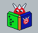

JALcc v2.0

another IDE
this program is freeware
designed by Stef Mientki
graphics by Robbert Mientki
october 2005
Introduction
Credits
Documents List
Minimized Drop
Presentation
Code-Editor
Batch CodeEditor
JAL CodeEditor
XCSB CodeEditor
PICbsc CodeEditor
Settings
Uploader / Programmer
Stack Parsing
JALcc macros
Wysiwyg Editor
Styles
Tables
Image Editor
Vector Editor
State Machines
VeroBoard
Diagram Designer problems
Hex Editor
WebBrowser
Audio Player
Global Settings
PDF generation
File Encryption
Handy Tools
History - Downloads
Bug Reports
FAQ
Problems
Intro
(not) blinking a LED
design notes
Documents List
Pic_header
the first steps
Multiply by fractional constant
fastreport_application
Intro nmn
Auto INC 2 JAL translation
History
JALcc, auto document generation
Character Generator
Demo Uitgebreid Rapport
d:\data_www\pic\jalcc\help\styles.txt
JALcc, Introduction
d:\data_www\pic\jalcc\help\jalcc_other_ide_frame.html
Report Generation